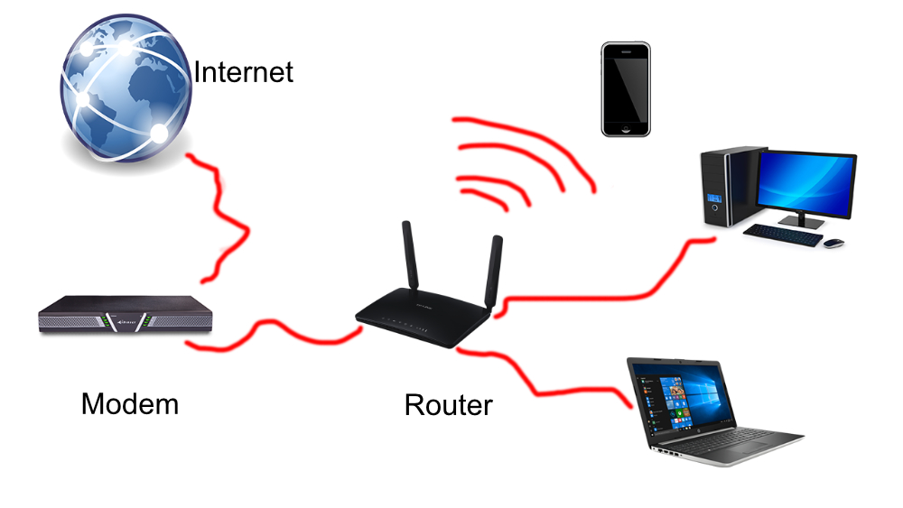

Internet Hardware
James Bellar
 image design by your © James
There is a ton of internet hardware. For instance modems have so many different uses. Cable, telephone, DSL, satellite. It can get very confusing. To put it simply, Network hardware is the individual components of a network system that are responsible for transmitting data and facilitating the operations of a computer network. Although a network contains many hardware components, there are several basic categories that make up the complete operations of a network system.
Types of Network Hardware
There is a lot when it comes to the types of hardware. So here is a basic list of Internet hardware;
- Cables & Wires. Everything may be turning wireless nowadays but at least 2-3 wired connections have to exist somewhere in a computer network. ...
- NIC.. NIC (Network interface cards) is easily one of the most important components of a computer network..
- Hubs.. There are two types; Network hubs, and USB hubs. click the link for more description
- Modems.. The word modem is short for "Modulator / Demodulator". it allows connection to the internet.
- Routers.. This is a hardware device that routes data
- Gateways..A gateway is a hardware device that acts as a "gate" between two networks.
- Wireless Access Points..An access point is a device, such as a wireless router, that allows wireless devices to connect to a network.
Summary
There is a lot of hardware when it comes to connecting to the internet. as you can see from all of this info it can all be really confusing, Gateways, Modems, Wireless Access Points. Its a lot to take in. but this information should help you get a head start instead of using google for hours on end trying to understand it all.